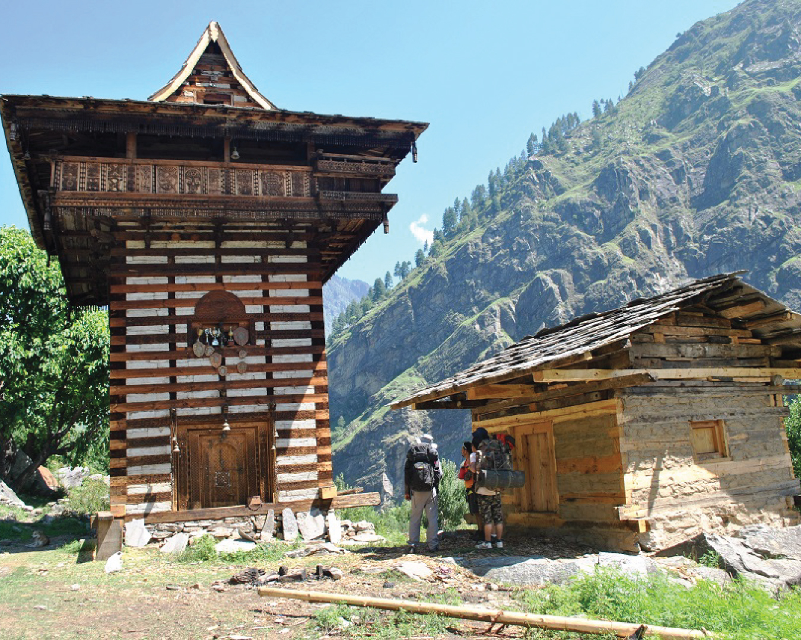
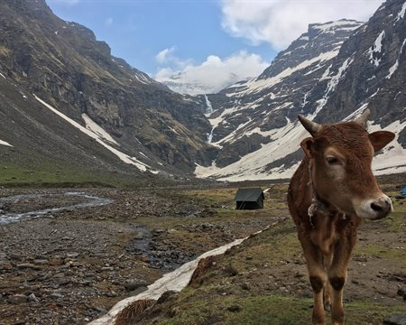
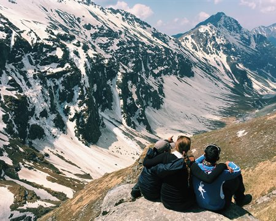
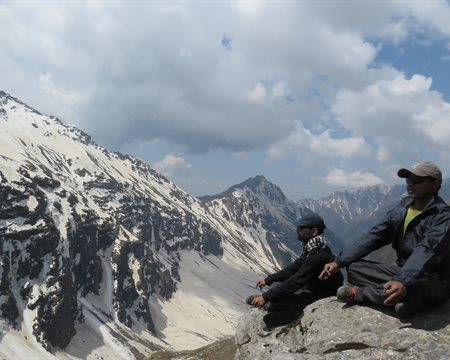
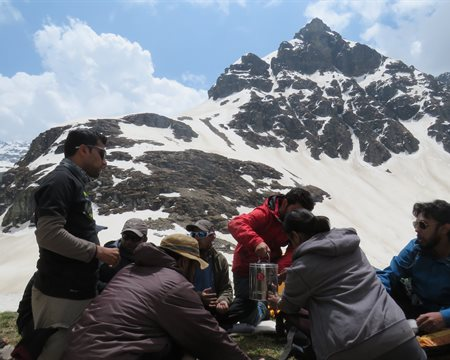

Rupin Pass Trek
The Grandest Cross-Over Trek of India
Available Batches

Brief Description


Brief Itinerary
8 Km
4 Hours
3546m
8 Km
4 Hours
3546m
8 Km
4 Hours
3546m
8 Km
4 Hours
3546m
8 Km
4 Hours
3546m
8 Km
4 Hours
3546m
8 Km
4 Hours
3546m
Detailed Itinerary
Day 1
Make Your Way from Shimla (2,276M) to Jiskun (2,099M)
Distance: 198 kms
Duration: 9-10 hours
If you have signed up with Bikat for a drive from Shimla to Jiskun, the day starts early. Everyone assembles at the meeting point by 7 in the morning so we can start our long drive up to Jiskun – a charming agricultural village in the Shimla district of Himachal Pradesh. Although there’s nothing more on the agenda for today other than the 10-hour drive, it is better to leave as early as possible for two reasons:
One, so we can reach as early as possible and give our bodies enough rest for what’s coming the next day. And, two, roads on the mountains are unpredictable and it is always better to account for delays when we start. It is also better to reach before it gets dark.
Day 2
Jiskun (2,350M) to Jhaka (2,750 M)
Distance: 6-7 kms
Duration: 4-5 hours
The trail for today snakes up in a continuous ascent through dense forests after passing through the traditional high-altitude villages of Himachal Pradesh. Once we cross the last signs of habitation, we cross over a small wooden bridge and head on upwards towards our destination for today.
Day 3
Jhaka (2,750M) to Dhanderas Thatch camp (3,566 M) via Saruwas Thatch (3,280M)
Distance: 11-12 kms
Duration: 8-9 hours
Today’s trail takes us all the way down to the river to walk alongside its beautiful blue waters as we follow all its curves and bends. The thicket of fir forests quickly transforms to patches of snow. On crossing these, a snow bridge and a wooden bridge, we hop and jump over some boulders and streams to enter another magical forest – this one rich in rhododendrons of varied hues.
A few more kilometers and we reach Saruwas Thatch– a massive field of meadows rich in all kinds of fresh colours. A little rest here and we push on towards Dhanderas Thatch which s only a short distance from here. Don’t mistake short for unexciting, however because this might as well be the best day of the entire trek which offers some of the most beautiful landscapes. This short walk on the colourful meadows takes us straight to the foot of the roaring Rupin waterfall which doubles up as our campsite for today. The magnificence of this trek is the constantly changing scenery – while the first day took us through fir forests, the second through rhododendrons, today we walk through the luminescence of silver oak trees until we end up at the campsite for the day – Dhanderas Thatch.
Day 4
Rest Day
This day can be used as a rest or buffer based upon the weather conditions and participants fitness. This day can be used at any camp and is at the discretion of the Trek Leader.
Day 5
Dhanderas Thatch camp (3566 m) to Upper Waterfall camp (4080 m)
Distance: 4 kms
Duration: 3 hours
Today’s trek is relatively short but exciting! We will be making our way to the top of the Rupin Waterfall. This section is important because it gives you ample time to acclimatize to the changing altitude and prepare for what is to come next.
The morning begins at leisure allowing the trekkers to rest their limbs properly. For about 1 km, the trail is fairly level as you cross several streams on your way decorated with a display of wild flowers and marigolds. The next section is tricky as you reach the snow patches at the base of the waterfall. This is when your snow equipments like trekking pole and ice-axe would come into play. The trek on snow is particularly challenging as the trail is steep and narrow in many sections. This continues for the next 1.5 kms before you reach the meadow at the top.
The Upper Waterfall Camp is a gorgeous meadow on the banks of a gently flowing stream. You will get to see the spectacular mountain ranges covered in snow and several streams running down through them merging into the Rupin river and disappearing below your feet. While everyone has seen a waterfall closely, only a few can claim to have seen it right from the top and observe it fall down right into the valley. You will one of those lucky few. Capture this moment at the most cinematic location one can imagine. This campsite is a true sight to behold!
Day 6
Upper Waterfall camp (4080 m) to Rupin Pass (4657 m); Rupin Pass to Ronti Gad Camp (4005 m)
Distance: 4 kms + 4 kms
Duration: 6-7 hours + 2-3 hours
This is perhaps the longest and the most thrilling day of the trek. We begin as early as 5 AM and carry packed lunch and breakfast along to reenergize ourselves on the way. The challenges begin to appear shortly after we begin the trek. The ascent to Rati Pheri is a steep incline veering through snow and gains a generous amount of altitude in an hour. The trail climbs over a ridge before reaching the campsite of Rati Pheri.
The landscape changes beautifully at Rati Pheri – a promise best kept by the Rupin Pass trek! The expansive views of the Rupin valley are replaced by the alpine Dhauladar range as you now move ahead over vast snowfields. Your trek leader will provide you with appropriate snow equipments such as microspikes and gaiters depending upon the level and density of snow on the trail. From Rati Pheri, the trek is steep and quite demanding as the snow makes it difficult to trudge through. It is slipper in some sections, while at others the snow may be knee-deep demanding every ounce of your energy to take that next step. All the snow techniques you have learnt so far are put to test and how so. In about 3.5 hours, you will finally reach the base of the Rupin Pass gully. Take some time to rest and rejuvenate for the gruelling trek ahead.
The Rupin Pass gully is a narrow and steep half tube in the mountain side that is prone to lose stones falling over. It stretches over 200 m and would take anywhere between 40 minutes to 1 hour to cover, depending upon the level of snow and the speed of the trekkers.
After a long and steep icy-climb, the sight of the saddle shaped Rupin Pass cutting its way through the Dhauladar Ranges rewards you with a feeling of pure bliss and euphoria. Hundreds of stone cairns and colourful prayer flags adorn the ridge line that offers impressive views of the Kinner kailash range in the north and the Rupin valley in the south. Spend some time at the ridge and relish the eternal glory of the spectacle in front of you.
The next phase of the trek steps up the fun quotient by a notch or three. To reach the Ronti Gad campsite, you get to glissade down the chutes of snow. The descent is sharp and rapid and sliding down the snow slope is the best way to cover the distance.
The slopes even out, after the steep descent, making for an easy walk. Once you cross snowline, be prepared for another sharp descent that leads you to an endless meadow with a stream flowing gently through the mountains. This is the Ronti Gad Campsite. You will be camping here for the night in the vicinity of the towering snow-capped mountains – yet another pleasant change in the landscape around.
Day 7
Ronti Gad Camp (4005 m) to Sangla Valley (2675 m); further to Shimla (2276 m)
Distance: 13 kms + 225 kms
Duration: 5-6 hours trek + 7 hours drive
We begin the descent to Sangla after breakfast, at around 9 AM. The trail is a dusty shepherd’s path as you move out of the Ronti Gad campsite. You may come across mule traffic and shepherds tending to their cattle along the way. Almost 2 hours into the trek, you will see the Ronti Gad valley retreating slowly behind you and the trail ahead opening up to first glimpses of the snow-clad Kinner Kailash range. The sight is an absolute marvel to behold.
Soon afterwards, you will see the first signs of civilization afar in the tiny village of Sangla Kanda. Take a quick break in the Sangla Kanda village and have a hot cup of tea to give yourself some respite from the sharp descent.
The trail from Sangla Kanda to Sangla veers through blue pine forests that come as a refreshing surprise. The trek gradient is a rapid decline over a broad well-defined path going through terraced farms, apple orchards and old stone houses.
As you finally reach Sangla, take one last look at the giant mountains around and bid adieu to one of the finest cross-over treks of the country.
*We will reach Shimla late at night, so make your hotel reservations accordingly.
What's Included
- Food as per menu on the trek (Starting Dinner on Day 1 till Packed Lunch on Day 8)
- Exhaustive First Aid kit including Oxygen cylinder
- Forest Permits/Camping Charges, if any (Upto the amount charged for Indian nationals)
- Dome tents - on twin sharing basis, Sleeping bags, mats
- Micro-spikes, Gaiters, Helmets, if required
- Trek guide, cook, helpers, and porters for carrying common supplies
- Mountaineering course certified Trek Leader with First Aid certification along with special rescue course from NIM, Uttarkashi
What's Not Included
- Portage of personal bags during the trek
- Cost of any kind of Travel Insurance.
- Any Expense of personal nature.
- Any Expense not specified in the inclusions list.
Are you Eligible for this Adventure?
Located at an elevation of 4,650M, Rupin Pass is a moderate level trek which for its difficulty level is suitable for anyone with some prior experience of high-altitudes.


BRS Level Required
This makes it mandatory for you to have high-altitude experience of preferably multiple treks marked at level 3 on the BRS. The altitude, the terrain and the nature of the climb demand a certain level of skill and a need for you to be aware of how your body reacts to the various features of high altitude environment.
If you do not know what level of BRS trek would suit you best, worry not! Fill out this Form:

we will send you a progression chart to help you comfortably get out of your comfort zone in order to level up and ultimately reach your highest potential in the big, bad world of outdoor adventure.


Packing List
This is a list of essential items for individuals doing the trek with Bikat Adventures. This list contains only those items which the participants are required to bring with them. The list excludes those items which are provided by Bikat Adventures on the trek. We have divided the items into five categories. All the items in the list are essential except for those marked as optional.
Trekking Gear
- Ruck sack bag with rain cover. Qty -1
- Day Pack Bag - Recommended for treks with summit day
- Head Torch with spare Batteries. Qty -1
- U V protection sunglasses. Qty -1 Here is how you can choose the best sunglasses for trekking.
- Water Bottles: 2 bottles of 1 liter each
Footwear
- Non-skid, deep treaded, high-ankle trekking shoes Qty -1
- Pair of light weight Slipper/Sandals Qty -1
Clothing
- Quick Dry Warm lower or Track Pants. Qty - 2
- Full sleeves T-shirts/ Sweatshirts. 1 for every 2 days of trekking
- Pair of thick woolen socks. 1 pair for every two days of trekking
- Thermal Body warmer Upper & Lower. Qty-1
- Undergarments. Qty - 1 for every day of trekking
- Warm jacket closed at wrist & neck .Qty-1
- Full sleeves sweater. Qty -1
- Rain wear ( Jacket & Pants ) . Qty-1
- Pair of waterproof, warm gloves. Qty-1
- Woolen cap. Qty-1
- Sun shielding Hat. Qty -1
Toiletries
- Personal toiletries kit (Small Towel, Toilet paper, paper soap, Bar soap, toothbrush, toothpaste, cold cream, etc.)
- Sun screen lotion small pack. Qty -1 Here is your Sun Protection 101 to stay safe in the bright sunny outdoors.
- Lip Balm small pack. Qty-1
Utensils
- Small size, Light weight & Leak proof lunch box. Qty-1
- Plate. Qty- 1
- Spoon.Qty-1
- Tea/Coffee (plastic) Mug.Qty-1
Miscellaneous
- Camera (Optional)
- Carry your medicines in plenty in case you have any specific ailment. Consult your doctor before joining the trek.
- Dry fruits, Nuts, Chocolate bars (Optional)
Frequently Asked Questions
Rupin Pass Trek is suitable for trekkers with prior experience, having completed at least one BRS 3 level trek or equivalent.
If you can Jog/Run for 4 kms in 30-35 mins, you are ready to take on this trek. Once a week, you can practice running 8 kms in an hour or so to improve your endurance further. In addition to this, you can also add resistance workouts to your schedule like squats, lunges, push ups etc.
If you cannot do the above, there’s no need to worry. It is important to remember that it’s all about practice. Get on a training schedule and we can assure you that you will meet these standards in a matter of a few months.
A certain level of fitness and physical endurance are required to take on any high-altitude trail in the Himalayas. Basic knowledge about Ascending & Descending techniques for mountain trails, how to use a sleeping bag, toilet tents, sleeping tents, and mountain mannerisms will be helpful.
The minimum age limit is 13 years. However, minors between 13 to 17 years of age should be accompanied by their parents/ guardians. If you are above the age of 60, kindly carry a medical certificate from your doctor that deems you fit for adventure activities like trekking.
Rupin Pass trek is located in Himachal Pradesh. It starts from a small village called Jiskun in the Shimla district and ends at Sangla in the Kinnaur district of Himachal Pradesh.
With breathtaking vistas of the Kinner Kailash range to the north and the Rupin valley to the south, the route provides an opportunity to witness firsthand the journey of the rushing waters of the Rupin River all the way to its source at the Rupin waterfall. Whether trekking through dense forests of pine and rhododendron, strolling through a suspended village, crossing vast glacial valleys, or making your way up the narrow and steep gully of Rupin Pass, sliding down snow chutes to Ronti Gad or scaling to the peak of a waterfall, there is never a dull moment once you are on the trail! For more details on the highlights of this trek, read Highlights of Rupin Pass Trek
The Rupin Pass trek presents several challenges that trekkers need to overcome to complete the trail successfully. Some of the challenges include steep ascents and descents, narrow and slippery trails, river crossings, and some sections with loose rocks and scree. Trekkers also need to be prepared for sudden weather changes as the region experiences heavy rainfall and snowfall. Trekkers need to be physically fit and mentally prepared for a strenuous climb. For more details on the challenges of this climb, read Who is this trek meant for?
The best time to do Rupin Pass is May - June, and September - October.
On the trek we have twin-sharing tents. In case you want an individual tent, you can add that to your booking request for an additional cost.
The temperature on the Rupin Pass trek varies according to the season and altitude.
During the summer months (May to June), the temperature ranges from 15 to 25 degrees Celsius during the day and drops to 5 to 10 degrees Celsius at night.
During the autumn season (September to October), the temperature drops significantly, ranging from 10 to 15 degrees Celsius during the day and reaching sub-zero levels at night.
The Rupin Pass trek can be considered technically challenging, especially for those who have not trekked before or have limited trekking experience. The trail involves steep ascents and descents, narrow and rocky terrain, river crossings, and some sections with loose rocks and scree, which require a certain level of physical fitness and agility to navigate.
The start point of the Rupin Pass trek is Jiskun in Himachal pardesh which is 198 km away from the capital, Shimla. There is no direct transport to Jiskun. You can take a bus from Tutikundi bus stand, Shimla till Rohru. Catch a local jeep from here to Jiskun.
Cellular networks are available till Jiskun. You will also find BSNL & Vodafone network at Jiskun.
The nearest ATM is located in the town of Rohru, which is situated on the way to the starting point, Jiskun.
Pick up point for Rupin Pass Trek is ISBT Shimla, by 07:00 am - 07:30 am to reach Jiskun (the starting point of the trek). Payment for the same will be divided between the number of participants and made on the spot.
Expect to reach Sangla by early afternoon. We provide an option to book transport to Shimla. In that case, you will reach Shimla by midnight 12:30 am. Payment for the same will be divided between the number of participants and made on the spot.
Rupin Pass trek ends in Sangla Valley. The views of Chitkul and Sangla Valley are to die for. Tourists from all over the country come to this valley to especially enjoy the breathtaking beauty of the mountains. Get a glimpse of the artistic legacy of the region at Kamru Fort which is dedicated to the Hindu Goddess Kamakhya Devi. Bering Nag Temple is an architectural wonder dedicated to Lord Jagas. The temple has an important mythological significance in the area. Brelengi Gompa is a beautiful monastery in Sangla that you ought to visit. If you have another day or two, you can add Chitkul to your program. Sangla is famous for wood carved artefacts and Kinnaur apples which you can take back as a souvenir from the trip. To know more read Top attractions near Sangla and Chitkul
All the common gear like tents, sleeping bags, mattresses etc. are provided. All the technical climbing equipment (as required) are also provided to you. Safety equipment used for rescue is carried by our trek leaders.
You can rent trekking shoes, trekking pole, a fleece jacket and a rucksack from us. In case you have any other requirements, you can talk to our representative and we will be happy to assist you in any way that we can.
You will receive your rented equipment at Jiskun, on Day 1.
Our trek leaders will collect the rented equipment from you at the end of the trek on the last day.
For a detailed list, check the Packing List section on this page.
You can buy Equipment from Shimla a day before we start. Jiskun is a small village with few shops from there you can buy most things but availability can be an issue. Please do not leave anything for last minute buying.
Although not recommended, you can off load your bag at an additional cost. Add a request while making your booking for the trek and it can be arranged.
(Note: We don’t recommend offloading because the extra resources on a trail - ponies or porters depending on the trail - means extra load on the environment which can easily be avoided. It also goes against the spirit of trekking by eliminating a level of endurance and discomfort from the experience which are factors at the very heart of an outdoor adventure activity.)
You can leave your extra luggage in Shimla at the Bikat base or you can use the bus stand Cloakroom.
On all trek days, we provide 3 full meals (breakfast, lunch & dinner) in addition to evening snacks and tea. The meals are vegetarian and the menu is pre-decided for all days of the trek. We do provide eggs as well on certain days. If you have any specific food-related allergies or restrictions, you can let our local staff (during the trek) know, and your requests will get accommodated. We try to provide a variety of food across meals so as to avoid repetition as well as cover all nutritional needs.
On campsites, our team will dig dry pits and assemble a toilet tent to provide for safe and secure quarters. A shovel will be provided within the toilet tent as well. Using water in the toilet tent is restricted; you will need to carry your own toilet paper. On the more difficult expeditions, toilet tents are not carried to the higher camps (above base camp) due to restriction of space (to pitch the tent).
In case you get your period on the trail and don’t have sanitary napkins, our trek leaders can provide them to you. If you need any other kind of assistance, you can let our trek leaders know. Irrespective of gender, our leaders are gender sensitised and equipped to assist you in any way you need them to.
Our team carries a first aid kit and all the basic medicines required during the trek. They are equipped to be the first responders in case of any injury or health-related issues. For higher expeditions, we also carry a HAPO Bag and oxygen cylinders to tend to any altitude-related health conditions.
No, we will be camping in the wilderness with no access to electricity.
A copy of your ID Proof and Medical Certificate are the mandatory documents required for this trek. (Soft copies for all of these are to be sent to us & originals should be on your person while on the trek.)
Yes, insurance for any high-altitude activity is highly recommended to cover for the cost of rescue, evacuation and any other emergency service required as well as to cover for medical cost in case of injury or illness during the trek. You can buy it on your own. Alternatively, if you want us to buy it on your behalf, you can mark it as an add-on during the booking of the trek.
Yes, there are multiple permits required for this. We obtain the permits on every trekkers’ behalf. All the permit costs are included in your trek cost.
Yes, you will receive e-certificates (of completion) after the trek. It will bear your name, the trek, and the maximum altitude you achieved on the trek. In case you were unable to finish the trek, you will get a certificate of participation.
On completion of the trek, the certificate will show up on your dashboard on our website. You can download it directly from there.
Rupin Pass Trek is in India. If you are coming from outside, you will need a visa to enter the country. You should be able to find the rules for obtaining a Visa based on your home country on the internet. This information is easily available.
This does not apply to you if you are an Indian citizen. In case you don’t hold an Indian passport, you will need to check online for Visa application rules based on your home country.
If you are not an Indian citizen, you will need Travel Medical Insurance to travel to the country. Please make sure that your insurance policy is valid for the altitude you are going to and the activity you are undertaking, to cover risks during the trek. The insurance policy provided by Bikat Adventures does not cover foreign nationals. So, please do not purchase it while making the booking from our website.
The Himalayas house the tallest mountains in the world and have long been a treasure trove for all adventure enthusiasts. The variety in terms of beauty, terrain, landscape, geography, culture and opportunity for adventure in the Himalayas, remains undisputedly unmatched.
You can make the booking any time depending on availability of slots in our fixed departure batches. You will get this information at the top of this page.
A Basic Mountaineering Course certification from one of the five recognized mountaineering institutes in India is a minimum requirement to join our team. Our field experts are also trained in basic medicine and first-aid response. We also conduct on-ground training for our staff once a year as a refresher for old skills and to learn some new ones. During this training that we call APW (Adventure Professional Workshop), our leaders learn close to 25 topics and techniques of rescue which are not covered in the BMC and AMC courses. For practical training, we simulate on-ground situations to prepare them for quick thinking and quick response during emergencies.
We follow a rigorous regime of hiring and training our experts on the field. Each trek leader is a certified mountaineer with years of experience in the field. The interview process to bring a trek leader on-board is close to 6 months long where we assess various skills as well as personality traits of an individual. They also go through an on-field assignment as part of the hiring process. Trek leaders also progress in time from leading easier treks before advancing to the more difficult ones where the stakes are higher. For detailed information on our selection process, please visit Forerunners - The Making Of A Trek Leader
It absolutely is. We recognize, value and embody the ideology that the world of outdoor adventure can benefit from diversity. We make it our mission to create outdoor spaces as equally accessible and safe for all genders as possible. We also encourage women leaders in the outdoors and all of our staff (irrespective of gender) is gender sensitised. As for accommodation, in case there are no other women on the trek, a solo female trekker is provided with a separate single-occupancy tent.
Our batch sizes for Rupin Pass Trek are capped at 15 with the trek leader to trekker ratio of 1:8.
In addition to their qualification, our trek leaders are trained to tackle any and all kinds of sudden conditions that may present themselves on ground. During our recce stage, we study the trail in great detail and map out rescue routes before opening it up for our trekkers. We also have local support staff stationed in each area to arrange for emergency services at the place of need as quickly as possible.
We mobilise road rescue efforts where our trek leaders bring the person to be rescued down to the trailhead of the trek from where a car can take them to the nearest healthcare facility. The cost of rescue is not covered in the trek fee that we charge. It must be borne by the participant. However, if you opt for the insurance, the cost of rescue operations can be claimed from the Insurance company on production of valid proof e.g. doctor’s prescription & hospital bills etc. Please note that Bikat Adventures is only a facilitator & not a party in the Insurance policy. You need to raise the claim request directly with the Insurance company. Bikat Adventures is not responsible for any rejection of claim. You can call the insurance provider directly for any clarifications related to the Insurance policy. Although not mandatory, we recommend buying the insurance. You don’t necessarily have to get the insurance we provide, you can pick an Insurance company of your choice and get a policy directly from them. If you need more information on the terms and conditions of the insurance policy, get in touch with our customer support team.
All the gear used on our treks and expeditions is tried and tested, maintained for good quality and is overall top notch in quality and condition. We are continually looking to obtain the best of everything there is in the market so as to ensure optimum safety.
That will depend on the nature of your medical condition. Do give us a call, and one of our people will help you understand what is best for you. If not this, we are sure there would be plenty of other options you can choose from our vast portfolio to pick as your next adventure.
We have rolling camps on all our trails. To know why we are strictly against the concept of Fixed Camping, read Reasons to Ban Fixed Camping in Himalayas
This is a complex question and has a compound answer. The simple response is that because it is bad for the environment which we dearly love but if you are interested in a more detailed response to this question, please read Reasons to Ban Fixed Camping in Himalayas
There are a number of measures that we take to prevent overcrowding on some of the most popular trails. Some of them are capping our group size at 15, capping the number of trekkers on a trail to 250 per season, constantly looking for newer trails and routes to spread the crowd around and providing incentives to our trekkers to try unexplored territories with us. We put in place the system of dynamic pricing, which is the first of its kind in the trekking industry, which incentivises trekkers to choose less crowded trails by offering higher discounts. We have noticed, since we started this system, that this has helped in a big way to spread out the crowds between trekking routes. We are also going international so as to relieve some of the stress on the Himalayan landscape as well as explore newer ranges and design newer experiences for our community. If you want a more detailed description of all our measures in this regard, please read Simple solutions to overcrowding on Himalayan Treks
Some basic things to remember are: do not use water, do not dispose of anything non-biodegradable inside the pits, carry your own roll of toilet paper and remember to cover up after yourself to leave a clean toilet for your fellow trekkers. Everything else is much the same like using an Indian style home toilet!
Most wet wipes are not biodegradable which means it could take 100 years or more for them to decompose – not the best thing if you are trying to ‘Leave No Trace’, right?
This is quite a tricky situation but not a hopeless one. Since most of our sanitary waste is not biodegradable, we recommend that you pack your pads/tampons neatly, store it in a zip-lock bag and bring it back down with you where there are better options to dispose of them. In case you do not have zip-lock bags, ask our trek leaders for them and they should be able to provide them to you.
Each trekker is responsible for the use and hygiene of their own eating utensils. And as a measure to maintain proper hygiene, we do not provide plates and spoons. Also, dipping your hands in cold water to wash your own utensils adds something to the overall joy of high-altitude living, wouldn’t you think?
On making the payment, you will receive a booking confirmation along with the packing list and a copy of the undertaking form via email. You will subsequently receive emails detailing documents required, how to prepare physically and mentally for the trek, information on pick-up location on the first day etc. Please add [email protected] in your trusted emails list to make sure our emails don't go to your spam folder.
A Whatsapp group will be formed a few weeks before departure. Members from our team are on those groups as well. Feel free to seek any clarifications you require in regards to the trek, on the group itself. Updates related to transportation/pickup point/pickup timing, accommodation etc. will be shared on the Whatsapp group as well.
Yes, we create a Whatsapp group a few weeks before the departure date so that the flow of information remains smooth and transparent.
Yes, it is one of the mandatory documents you will need to submit before the trek starts. The soft copy is to be sent to us & the original should be on your person while on the trek.
Yes, we will provide you an undertaking form through email which will need to be filled up by you and submitted to us post booking.
Why Bikat?

Small Group Size
Our batch sizes are capped at 15 for smaller treks with the trek leader and trekker ratio of 1:8. This ratio, in our years of experience, has proven to deliver the best trekking experience for individuals as well as groups. Capping the size of the group ensures individual attention to each trekker so that no signs of distress or need during the trek go unnoticed. It also helps to form a more cohesive cohort with better group energy which helps define the rhythm and pace of days on the trek. As you go higher up on the BRS scale, since the stakes are higher, expeditions have an even smaller group size with the ratio of expedition leader to climber set at 1:2.

Qualified Trek Leaders
We follow a rigorous regime of hiring and training our experts in the field. Each trek leader is a certified mountaineer with years of experience in the field. In addition to their qualification, they also go through practical and situational training to tackle any and all kinds of sudden conditions that may present themselves on the ground. Being unpredictable is the core nature of the mountains but being ready for any circumstance as best as possible is a controllable asset that we try to nurture. Our field experts are also trained in basic medicine and first-aid response. Watch: Forerunners - The Making of A Trek Leader At Bikat Adventures

Guided Progression
Since Bikat Adventures is a learning-based organization, we help you climb up the ladder of difficulty within the sphere of outdoor adventure systematically. Our on-ground training modules are designed to handhold you through the upskilling process so that you are ready to take on bigger challenges.

Equipment Quality and Check
All the gear used on our treks and expeditions is tried and tested, maintained for good quality, and is overall top-notch in quality and condition. We are continually looking to obtain the best of everything there is in the market so as to ensure optimum safety.

Support Systems
Along with the staff you see on-ground, we have a team of superheroes working in the background to give you the best experience possible. Our background team also comprises local staff from each area who know the region best. Having local support helps with studying the area, pre-planning, execution, and in receiving timely support in case of emergencies in these remote locations.

Communication
Our on-field staff is in constant contact with our teams based in primary locations so as to eliminate any avoidable delay in reaching additional help and support when required. We try to use the best tools for communication available, including satellite phones, in regions where they are not restricted.
What our customers Say


Cancellation Policy
Cash refund
Cancellations up to 60 days prior to departure date
Between 60 days upto 30 days prior to departure date
Between 30 days upto 10 days prior to departure date
Less than 10 days prior to departure date
Voucher refund
Cancellations up to 30 days prior to departure date
Between 30 days upto 15 days prior to departure date
Between 15 days upto 10 days prior to departure date
Less 10 days prior to departure date
Please Note:
- Cash refund is applicable only in case of bookings made without using any promotional offer code or Cancellation Vouchers or Discounts. "Cash Refund will be processed in 7-14 working days."
- This is only a brief of cancellation terms. For finer details please refer Detailed Cancellation Policy.
Blog Posts

Informative
Located at an elevation of 4650 M, Rupin Pass is a jaw-dropping high-altitude trek that creates a sensational passageway between the states of Uttarakhand and Himachal Pradesh. Apart from offering glorious views of the Kinner Kailash range in the nor...
Read full

Highlights – Rupin Pass Trek
Informative
Resting at 4650 m and stretching over 65 km, Rupin Pass is a thrilling cross-over trek from Uttarakhand to Himachal Pradesh.
Every turn on the trail feels like a giant theatre curtain unfurling, revealing dramatic landscapes drenched in a mind...
Read full

Rupin Pass Trek Flora And Fauna
Informative
The mountains become our temporary home as we fall in love with them.
But doesn’t someone else already live there?
The answer is, yes. Actually, a lot of “someone elses” live there- in the grass and trees, under the rocks and grow...
Read full

Fun Rupin Pass Trek Statistics
Fun Stats
Okay so we know the max altitude or Rupin Pass and the kilometers you have to travel to get there, but just for fun, what if we mixed things up a little bit?
...
Read full

Can You Find The Ten Hidden Gems Of Rupin Pass Trek?
Informative
The trails of Rupin Pass are notorious for their ever-changing beauty, but what does that mean? Here's a glimpse into our top ten #TrailTreasures that reveal themselves to you during this once-in-a-lifetime adventure:
...
Read full

Our Book of Adventures
During a full-fledged trekking season in May of 2019, the Rupin Pass witnessed a curious sight that was incomprehensible at first glance.
Roughly 100 M below the Pass, on the slope that faces the Ronti Gad campsite, five figures sat huddled together...
Read full

Story Of Healing Grass And Greedy Shepherd - Local Stories From Rupin Pass
Folklores
We come to the mountains for the view and the sweat-earned bliss, but we weren’t the first here and we won’t be the last. Whose feet walked these trails of Rupin Pass before ours, and what stories do they have to tell?
Long before a...
Read full

Informative
Sangla Valley is undoubtedly one of the most beautiful valleys in the country which is why it makes a popular destination among tourists. Set on the banks of Baspa River, one can enjoy the exceptional views of the Himalayas from the valley. T...
Read full
Similar Adventures

Annapurna Base Camp Trek
The perfect mesh of adventure, culture and natural splendor
Nepal
9 Days
BRS 4
4130 m

Buran Ghati Trek
Trek with the most thrilling rappelling experience
Himachal
8 Days
BRS 4
4575 m

Gaumukh Tapovan Trek
Not just a trek but a journey to the source of River Ganga
Uttarakhand
8 days
BRS 4
4460 m


{kind=link}
{kind=link}
{kind=link}
{kind=link}
{kind=link}
{kind=link}
{kind=link}
{kind=link}
{kind=link}
{kind=link}
{kind=link}
{kind=link}
{kind=link}
{kind=link}
{kind=link}
{kind=link}
{kind=link}
{kind=link}
{kind=link}
{kind=link}
{kind=link}
{kind=link}